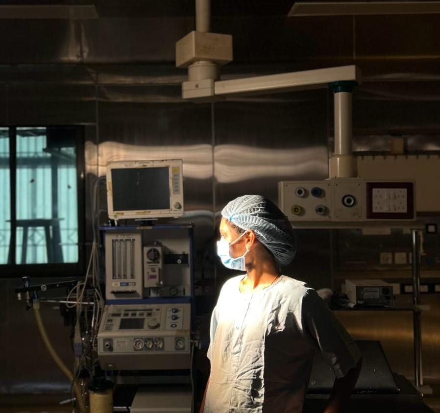

< !doctype html>Biomedical Engineering Portfolio | Varshini MSkip to content
Biomedical Engineering · Portfolio
MEDICAL MEETS MAKE.
I'm Varshini M, a Biomedical Engineering student interested in medical devices, healthcare technology and applying AI to real-world healthcare challenges.
A mix of biomedical device concepts,
connected monitoring and healthcare technology. Tap any photo to view it larger;
replace the image paths with your real project photos.
PROJECT / 01
🫁
AI-Based Chest Drainage System
An intelligent pleural drainage monitoring system designed to monitor drainage output and airflow using integrated sensors, with real-time parameter visualization and remote patient monitoring through a mobile application.
Final-year projectMedical deviceAI in healthcare
PROJECT / 02
👶
Smart Wearable Neonatal Apnea Detection
A wearable monitoring concept combining multi-sensor biosignal tracking,
apnea detection and a connected dashboard for caregiver alerts.
Wearable health techDashboardIoT / AI concept
Keep sensor names,
architecture and outcomes aligned with your actual prototype.
PROJECT / 03
🧬
VERA Project
Visionary Emotional Response Analyser (VERA), a physiological response analysis system exploring the use of GSR and pulse signals to support criminal investigation and interrogation.
Biomedical projectPrototype / concept
PROJECT / 04
⚡
Arduino-Based Therapeutic Project
An ultrasonic proximity-detection assistive device designed to identify surrounding obstacles and provide auditory alerts through a buzzer, supporting spatial awareness and mobility assistance for individuals with visual impairment and physical disabilities.
ArduinoTherapeutic device
02 / Toolkit
Curious mind. Practical toolkit.
"Combining biomedical knowledge with programming, embedded systems and creative problem-solving to develop practical healthcare solutions"
⌘ Programming
Python · Java · SQL (basic)
◈ Design & modelling
SolidWorks for medical-device and 3D structures
⌁ Embedded & IoT
Arduino IDE · Basic integration · IoT basics
◎ Biomedical
Medical imaging · Exposure to hospital medical instruments
✳ Healthcare innovation
Medical devices · Healthcare technology · AI applications in healthcare
↗ Collaboration
Hackathon participation and Team-based project experience
03 / Field exposure
Learning beyond the classroom.
Short hospital internships gave me exposure to the equipment and documentation side of biomedical engineering.
15 DAYS · INTERNSHIP
Sri Ramachandra Hospital
Junior intern;
learned about hospital medical instruments and how they are used in a clinical environment.
15 DAYS · INTERNSHIP
Sri Muthukumaran Hospital
Junior biomedical engineering intern;
exposure to documentation work and the role of biomedical engineers in a hospital.
INTERNSHIP
Barola Technologies
IoT internship involving sensors and microcontrollers,
along with a full-stack web application for live environmental data.

ADD FIELD EXPOSURE PHOTO assets/field-exposure.jpg
FIELD EXPOSURE / LEARNING IN PRACTICE
04 / Proof of progress
Recognising milestones. Building experience.
Celebrating achievements, teamwork and innovation through hackathons, technical challenges and hands-on experiences.
CERTIFICATE TRAY · ACHIEVEMENTS
🏆
IEEE 24-Hour Hackathon
3rd Prize · Vidhya Jyothi College
✳
THREX 48-Hour Hackathon
Special Mention
05 / Beyond the lab
Team spirit. Real-world energy.
A scrapbook-style wall for sports,
leadership and volunteering—personal moments that show collaboration beyond projects.
SPORT / 01
Kho-Kho &
SRM Premier League
Kho-Kho athlete and tournament runner-up—bringing teamwork,
focus and quick decisions into the game.
LEADERSHIP / 02
Department Technical Club
Operations Head,
supporting team coordination and student technical activities.
VOLUNTEERING / 03
Community &
Service
Volunteer with SAVE Trust,
supporting learning and community activities.
FREELANCE / 04
Freelance Website Design
Designing and building websites for clients using visual design tools and AI-assisted development workflows,
from layout to deployment.
Project 1UI / UXWeb deployment
INITIATIVE / 05
SeVa-X — Initiator &
Chief Digital Officer
Helped initiate SeVa-X and led its digital presence,
including website design and online brand experiences.
InitiatorChief Digital OfficerDigital experience
06 / The person behind it
Engineer by study. Builder by curiosity.
I enjoy exploring how engineering tools can support better healthcare experiences,
from medical devices to connected monitoring concepts.
YOUR PHOTO assets/varshini-casual.jpg
Varshini M
B.Tech Biomedical Engineering· SRM Institute of Science and Technology
Fourth-year student · CGPA: 9.3
Interests: medical devices,
healthcare technology,
AI in healthcare,
hospital equipment and robotics.
WHAT DRIVES ME
Healthcare with purpose.
I chose Biomedical Engineering because it brings together medicine and engineering. My goal is to keep learning and contribute to useful healthcare technology.
COMMUNICATION
Languages
English · Tamil · Telugu · German(Basic)
Open to adding a short,
recruiter-friendly introduction or career objective.
07 / Say hello
Let's build what helps.
Interested in paid internship and entry-level opportunities related to biomedical engineering, medical devices and healthcare technology. Open to relocation for the right opportunity.
Email:varshini7013m@gmail.com Phone:9043757013 LinkedIn: https://www.linkedin.com/in/varshini-murali-802a97323 GitHub: https://github.com/VARSH-cloud
Location:Chennai,
India · Open to relocation